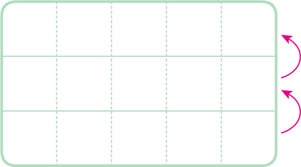
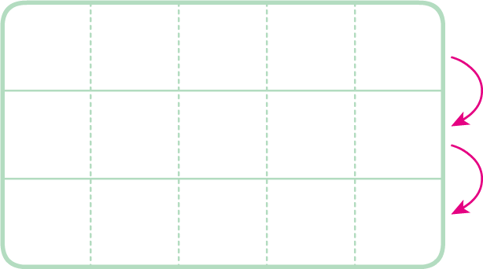

- 물음 1
- 물음 2
-
빈칸에 알맞은 수를 써넣으세요.
6276270 6 2 7. . .10배10배040040 4. . .- 1
- 10
- 1
- 10
-
소수의 크기가 어떻게 변하는지 이야기해 보세요.
예소수를 10배 하면 소수점을 기준으로 수가 왼쪽으로 한 자리씩 이동하고, 소수의을 구하면 소수점을 기준으로 수가 오른쪽으로 한 자리씩 이동합니다.- 1
- 10
예소수점이 이동하는 것으로 생각하면 소수를 10배 하면 소수점이 오른쪽으로 한 칸씩 이동하고, 소수의을 구하면 소수점이 왼쪽으로 한 칸씩 이동합니다.- 1
- 10